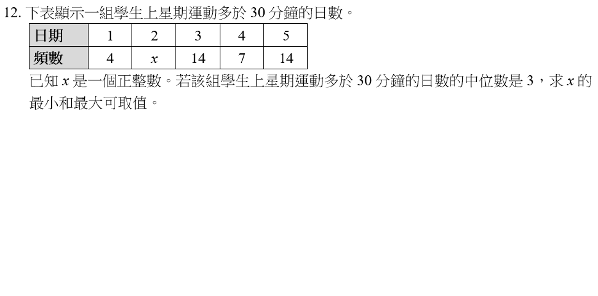

下表顯示一組學生上學期運動多於 30 分鐘的日數。已知 x 是一個正整數。若中位數是 3，求 x 的最小和最大可取值。
下面的頻數表已填好這題。你也可以改數字，做成另一題同一類型的題目。助手不會一開始就給答案。
| 顧客人數 |
|---|
| 頻數 |
| 操作 |
頻數輸入正整數。這一類題目可把其中一格輸入 x，表示未知頻數。
助手會追問，不會先把 x 的答案說出來。提示一只給方向，提示二指出要用的數量，提示三才給方法。計算由這個網頁負責，不靠模型心算。
未填 key 時，不會聯絡 Google，也不會產生費用。上面的引導可以照常使用。直接雙擊 index.html 就能打開。
稍後把 Google AI Studio 的免費 key 存在這部瀏覽器。請不要為這個專案連結付款。程式只呼叫免費模型 gemini-3.5-flash-lite，不用搜尋、圖像或其他會收費的功能，也不會改叫別的模型。
未設定 API key。